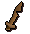
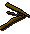

")
The Fishing Trawler
The Fishing Trawler is only accessible to RuneScape Members. Please subscribe to get this feature.
Please note this is a 'Safe' activity. There is nothing to kill you here, unless you are poisoned.
Introduction

Murphy will give you a share of the catch, if the boat gets back safe and sound.
Location


Requirements
You need at least level 15 Fishing to help catch any fish and you will only be able to catch sea water fish up to your level. This is the only way for high-level fisherman to catch sea turtles and manta rays.
Recommended Items
You will need to gather supplies before you board the Trawler. All items can be bought at the general store in Port Khazard. However, these are sold at inflated prices.
You should bring the following things when Trawler Fishing:
Item |
Use |
![[image]](../../img/main/kbase/items/misc/coins.gif) Gold pieces Gold pieces |
You will need gold pieces to buy supplies. |
![[image]](../../img/main/kbase/minigames/trawler/swamp_paste.gif) Swamp paste Swamp paste |
You will need swamp paste to stopper leaks in the trawler's hull. If you would rather make it for yourself than buy it from the shop, mix some swamp tar with flour and then cook the mixture. Swamp tar can be found in the swamps south of Lumbridge. |
![[image]](../../img/main/kbase/items/misc/emptybucket.gif) Bailing bucket Bailing bucket |
It is used to bail water out of the bottom of the boat. If the boat starts to fill with water you will be glad you have one. |
![[image]](../../img/main/kbase/items/misc/climbing_rope.gif) Rope Rope |
The net has a tendency to break, so you will need some rope to repair it; the Crafting skill will help here but it is not a requirement. |
Bring friends, alone it is almost impossible! |
The Trawler
To begin the activity you will first need to speak to Murphy at the docks. He will explain what items you will need and what you will be doing whilst on the trawler, before telling you to jump aboard.
To get onto the boat, all you need to do is click on the gangplank. Once the first person steps aboard you have one minute for the rest of the team to board before the boat leaves the port.
Players wishing to play will have to wait ten minutes for the first trip to finish before they are able to go on the next trip.
Once you are aboard, you will need to start work almost immediately. You will need to fix the leaks with swamp paste by clicking on the holes, bail the water out with your bucket and repair the net (situated up the ladder at the rear of the boat) by using a rope with it.
You can check your progress by watching the water meter at the top of the screen. You can also monitor the condition of the net, how many fish you have caught and the amount of time that you have left to keep the boat above water.
Next to the water meter is an activity meter. If you don't help out, the meter will empty in around 2 minutes, at which point the crew will cast you overboard and you will receive no fish for the trip. Of course, if you're working to plug holes, repair the nets and so on, your meter will replenish and you will not be at risk of being thrown into the ocean.

To get out you will need to click on a floating barrel. This will safely take you south of Port Sarim.
Murphy and his boat will be waiting for you at Port Khazard.
If you and your team are successful at keeping the boat afloat, the activity will last for ten minutes before heading back to the port. Once back, inspect the net and choose what you would like to keep from the assortment of fish and junk.
Rewards
Fish
| Catch | Levels required | Experience gained |
![[image]](../../img/main/kbase/items/food/fish/shrimp1.gif) Shrimp Shrimp |
1 |
5 |
![[image]](../../img/main/kbase/items/food/fish/sardine1.gif) Sardine Sardine |
5 |
5 |
![[image]](../../img/main/kbase/items/food/fish/anchovy.gif) Anchovy Anchovy |
15 |
5 |
![[image]](../../img/main/kbase/items/misc/seaweed.gif) Seaweed Seaweed |
16 |
5 |
![[image]](../../img/main/kbase/items/gems/big_oyster_pearls.gif) Oyster Oyster |
16 |
34 |
| Edible seaweed |
16 |
5 |
![[image]](../../img/main/kbase/items/food/fish/tuna1.gif) Tuna Tuna |
30 |
32 |
![[image]](../../img/main/kbase/items/food/fish/lobster1.gif) Lobster Lobster |
40 |
36 |
![[image]](../../img/main/kbase/items/food/fish/swordfish1.gif) Swordfish Swordfish |
50 |
40 |
![[image]](../../img/main/kbase/items/food/fish/shark1.gif) Shark Shark |
76 |
44 |
![[image]](../../img/main/kbase/items/food/fish/seaturtle.gif) Sea turtle Sea turtle |
79 |
38 |
![[image]](../../img/main/kbase/items/food/fish/mantaray1.gif) Manta ray Manta ray |
81 |
46 |
The Junk
You will receive a maximum of three junk items at the end of a trawl.| Catch | Fishing Level | Experience Gained |
| - | 5 | |
| Rusty sword | - | 5 |
![[image]](../../img/main/kbase/minigames/trawler/broken_glass.gif) Broken glass Broken glass |
- | 5 |
![[image]](../../img/main/kbase/minigames/trawler/broken_armour.gif) Damaged armour Damaged armour |
- | 5 |
![[image]](../../img/main/kbase/items/misc/emptypot.gif) Pot Pot |
- | 5 |
| Broken staff | - | 5 |
![[image]](../../img/main/kbase/minigames/trawler/buttons.gif) Buttons Buttons |
- | 5 |
![[image]](../../img/main/kbase/minigames/trawler/old_boot.gif) Old boot Old boot |
- | 5 |
Development Team
Developer: Tom W
QA: Mark O, Jon S
Audio: Ian T

More articles in
Activities
|
|
|
Further Help
If this article does not help you, you may find the following sections of the RuneScape site helpful:
|
|